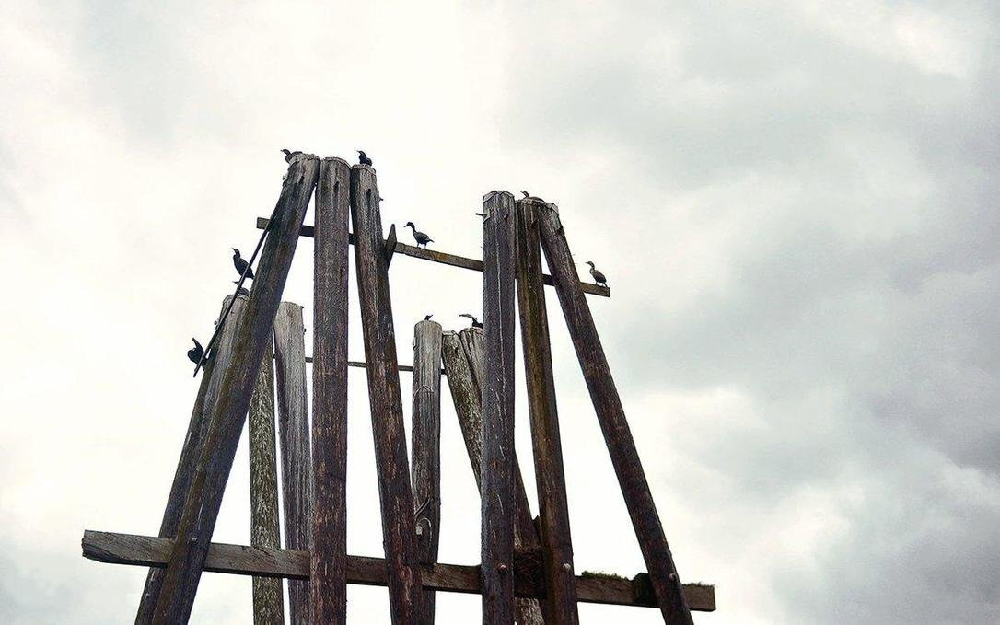

western canada
We bought Pino in North Saanich, British Columbia, Canada in 2016. We left in August 2016 to circumnavigate the Pacific Ocean. We returned to our home waters in August 2020 after our north pacific ocean crossing from Japan.
We are most familiar with the anchorages, weather and current of the Salish Sea, between Victoria and Desolation Sound. The best time for sailing is in late spring and early fall, in the shoulder season. August is typically a very quiet month, with heavy occurrences of fog, especially near Juan de Fuca Strait. Winters days are short, cold, and stormy. The Salish Sea is sheltered from heavy weather systems by Vancouver Island, which funnels winds from the south, or the north. Because it is sheltered, and dotted with islands, there are a lot of strong currents, especially in narrow passes. In fact, most of the B.C. coast requires a sailor to contend with currents, especially in the area north of Desolation Sound and up to Cape Scott.
The Salish Sea is very dry in the summer months, it is easier to get fuel than water in the Gulf Islands, but the weather north of the Yuculta and Dent Rapids changes dramatically, it is often cold, rainy, and foggy, and water is plentiful. The typically summer pattern is for overcast mornings, with fog, which dissipate during afternoon as the wind comes up.
There is too much to say about the many regions of this wonderful coast, spending time in each one, observing weather patterns, is the very best way to learn.
- Currents and Tides Resources
- Wind and Weather Resources
- Books About Anchorages
- Sailing Directions
- Our Summer Sailing Routes
- Our Cruising Notes
Tide and Current Resources
The tide and current situation makes it tricky to sail in BC, but there are many resources to make it easier to safely plan a sail. We always refer to the CHS Current and Tide Tables[1] and/or Ports and Passes Tides and Tables[2] when going through high-current passes like Dodd's Narrows, Porlier Pass or more dangerous rapids like Seymour Narrows, Dent Rapids, and Malibu Rapids.
The Canadian Hydrographic Service also has a Current Atlas[3] in print that makes it easier to visualize how the current moves between the numerous islands populating the Salish Sea(Strait of Georgia and Juan de Fuca Strait). Looking up the month, day, and time in the Current Atlas Tables[4] will indicate the correct current chart to refer to in the Current Atlas. This book is very useful, the current patterns change a lot during the year. Current swirls around small islands, it can run with you one day on an ebb, but turn against you on an ebb the next month - this is true when sailing north from Sidney to Galiano Island, depending on the time of the year, we sometimes have to go east, or west of Portland island on a flood to make good progress northward. The Current Atlas Tables show this clearly, the tables help you make better progress while saving fuel(if motoring).
[1] Tide and Current Tables (published by the Canadian Hydrographic Service)
Available here. Volume 5, 6 and 7 cover the entire Canadian West Coast. Released in January every year. Adjust for daylight savings time, being an hour off when transiting a rapid can be very dangerous.
[2] Ports and Passes
Tide and current guide, similar to the CHS tables, covering Puget Sound, BC, and SE Alaska. Contains local knowledge, and how to use secondary tables to calculate tides and currents at any secondary station.
[3] Current Atlas - Juan de Fuca Strait to Strait of Georgia (published by the Canadian Hydrographic Service)
Available here. Used in conjunction with Vol.5 of the Tide and Current Tables and/or the list of tables listed below(Washburne, Murray's, borsboom & ports and passes). This book contains diagrams illustrating where to expect strong tidal streams or large eddies, as well as surface currents caused by the discharge of the Fraser River. Keep the same copy forever. The atlas explains how to use secondary tables to calculate tides and currents at any secondary station
[4] Current Atlas Reference Tables
- Murray's Tables(sold in Canadian Marine Stores)
- Ports and Passes Current Atlas Tables (sold in Canadian and US Marine Stores, formerly Washburne's Tables)
- Borsboom's Tables (digital)
Disclaimer: We've used these tables for the past 3 years, predicted conditions matched the current we encountered, but we haven't compared it to other tables. Use at your own risk.
Use these tables to quickly determine which chart of the Current Atlas - Juan de Fuca Strait to Strait of Georgia to consult to reference when planning a sail. Released in January every year.
[5] Salish Sea Nemo Model Daily Results (A UBC project)
Models of tidal predictions in the Salish Sea, with visualizations.

Wind and Weather Resources
To sail the Inside Passage waters, tools like Windy or Predict Wind aren't always accurate, the geography of this coast is complex, it affects the wind in curious ways that are not always reflected in their predictions.
For more accurate wind forecasts, look at the conditions reported by specific buoys, automated stations and lighthouses scattered along the coast[5,6 and 7](click on the Weather Conditions tab and select the desired buoy or land station). To learn how land affects these waters(inflow/outflow winds, cape effects, sea breezes etc), read books by local authors like Marilyn Johnson[8].
- Metport
A detailed, marine-focused weather prediction portal for the Juan de Fuca Strait and for Georgia Strait, with frequently updated visualizations. - [5]Pacific Georgia Basin. Wind and weather forecasts for the Pacific Georgia Basin.
- [6]Pacific North Coast. Wind and weather forecasts for the Pacific North Coast.
- [7]Pacific South Coast. Wind and weather forecasts for the Pacific South Coast.
- [8]Taken by the Wind: The Northwest Coast by Marilyn Johnson.
Books About Anchorages
See also Sailing Directions for anchorages.
- Waggoner Guide (1 volume that covers BC, SE Alaska, and Washington). Note: Waggoner is most useful for marinas and port layouts.
- Dreamspeaker Series (4 volumes covering The Broughtons, Desolation Sound/Discovery Passage, Gulf Islands and Vancouver/Sunshine Coast) Note: Content from older editions may not reflect current conditions in many anchorages, for instance, it is no longer possible to anchor in Degnen or Horton Bay because of mooring clutter.
- Exploring the North Coast of BC by Douglass & Hemmingway-Douglass (Blunden Harbour to Dixon Entrance).Note: This book often has outdated content too, like when mentionning the presence of a dock when it is no longer there, or half sunken, but it is still useful.
Sailing directions
Sailing Directions cover all of Canada, and are essential to navigating waterways in B.C. The directions also include anchorages, and dangers. The books are available online as PDFs, get the latest sailing directions.
Our Summer Sailing Routes
Since 2020 we've spent our winters on the Victoria docks, and summers cruising in the Salish Sea. Dotted lines indicate the return trip, with some overlap with the starting routes.

Victoria > Cadboro Bay > North Saanich > Wesport Boatyard > Genoa Bay > Glenthorne Passage > Ganges(SaltSpring Island) > Montague (Galiano) > Southey Bay > Gabriola > False Creek(Vancouver) > Gabriola > Clam Bay > Montague Harbour(Galiano) > Lyall Harbour (Saturna Island) > North Saanich > Victoria. Note. We had engine problems that year, so we didn't cruise around too much. See engine rebuild. We also did a lot of boat projects, like installing our woodstove, our dry toilet and dealing with thruhulls.

Victoria > Sidney > Glenthorne Passage (Prevost Island) > Montague (Galiano) > North Cove (Thetis Island) > Nanaimo > Secret Cove > Pender Harbour > sturt bay Texada Island > Grace harbour > Melanie Cove > Refuge Cove > hathayim marine park > Melanie Cove > Tenedos Bay > Sturt Bay > Bargain Bay (Setchel Peninsula) > Gabriola (Silva Bay) > Montague (Galiano) > Lyall Harbour (Saturna Island) > Sidney > Montague (Galiano) > Sidney > Cadboro Bay > Victoria.

Victoria > North Saanich > Glenthorne Passage (Prevost Island) > Montague (Galiano) > Glenthorne Passage > Westport Boatyard > Genoa Bay > Maple Bay > Telegraph Cove (Thetis Island) > Gabriola (Silva Bay) > Smuggler Cove (Setchel Peninsula) > Pender Harbour > Princess Louisa Inlet > Baker Bay (Hotham Sound) > Thunder Bay > Sturt Bay (Texada Island) > Roscoe Bay (West Redonda Island) > Melanie Cove > hathayim marine park > Heriot Bay > Octopus Islands > Waiatt Bay > Octopus Islands > hathayim marine park > sturt bay > Ballet Bay (Nelson Island) > Smuggler Cove > Gabriola > DeCourcey Island(SE anchorage) > Montague Harbour Galiano > Glenthorne Passage > Sidney > Oak Bay > Victoria.

Victoria > North Saanich > Montague (Galiano) > Secretary Islands > Smuggler Cove > Pender Harbour > Ballet Bay > Sturt Bay > Galley Bay (Desolation Sound) > Refuge Cove > Frances Bay > Shoal Bay > Forward Harbour > Port Neville > Telegraph Cove > Port McNeill > Millbrook Cove (Smith Sound)> Fury Cove (Penrose Is.) > Codville Lagoon(King Is.) > Lizzie Bay (Hunter Is.) > Higgins Passage(Price Island) > Bone Anchorage, Racey Inlet(Princess Royal Is.) > Patterson Inlet(Pitt Is.) > Captain Cove(Pitt Is.) > Prince Rupert > us se alaska(see this page for the rest of the route) > Prince Rupert > Hunt Inlet(Porcher Is.) > Captain Cove(Pitt Is.) > Moncton Inlet Lagoon(Pitt Is.) > Dunn Passage(Campania Is.) > Doig Bay(Princess Royal Is.) > Meyers Passage Cove(Swindle Is.) > Clothes Bay(Swindle Is.) > Shearwater(Denny Is.) > Kisameet Bay(King Is.) > Kwakume Inlet > Green Is. Anchorage > Millbrook Cove(Smith Sound) > Allison Harbour > Blunden Harbour > Port Mcneill > Sointula (Malcom Is) > Boat Bay > Forward Harbour > Bickley Bay > Hathayim Marine Park > Refuge Cove > Melanie Cove > Sturt Bay > Bargain Bay > Secret Cove > Gabriola(Silva Bay) > Galiano(Montague).
Our Cruising Notes
We don't have pages for all of the passes, ports, or anchorages we visit, but here are a few:
SOUTH COAST
Gulf Islands
The Sunshine Coast
- Cathedral Grove
- Sturt Bay(Texada Island)
- Smuggler Cove
- Princess Louisa Inlet
- Ballet Bay
Desolation Sound
Discovery Islands
- Octopus Islands
- Heriot Bay
- Hathayim Marine Park(Von Donop inlet, Cortes Island)
Johnstone Strait (and islands adjacent)
Queen Charlotte Strait
NORTH COAST